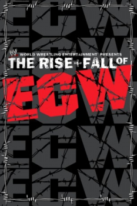

Country:United States, 300 minutes
Spoken languages:English
Genres:Documentary
Director(s):Kevin Dunn
Writer(s):Paul Heyman
Video Codec:Unknown
Number: 238


Certification:
Storyline:
The Rise + Fall of ECW is a 2004 direct-to-video documentary produced by World Wrestling Entertainment. It chronicles the history of Philadelphia-based professional wrestling promotion Extreme Championship Wrestling.
Cast:
Medium: Original DVD,
Loaned: No
Aspect ratio: Unknown